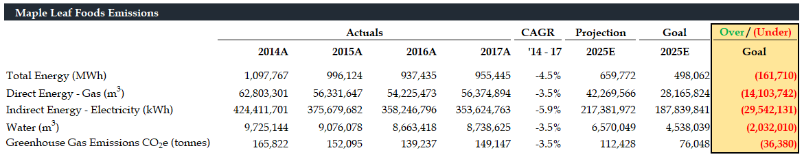

If Maple Leaf Foods continues to reduce its carbon impact with its current initiatives, they will be unable to meet their 2025 target based on projections using the most aggressive assumptions.

There is a history of using carbon labels on food products around the world, most notably in Sweden and in the UK, to identify the size of the environmental footprint associated with the creation of the food product. Maple Leaf Foods has the opportunity to be an industry leader in Canada by integrating such a label with their products.
By partnering with The Carbon Trust, and making the consumer wary of emissions in the foods that they are buying, Maple Leaf Foods can gain trust from the consumer and reduce demand for its high emission products. In addition, by lobbying with government leaders and officials to include this label on other consumer meat products, Maple Leaf Foods can differentiate their product by being the leading firm in the market with the lowest carbon footprint.
By reducing demand for high emission products and offsetting it with low emission products, Maple Leaf Foods will be able to reduce their own emissions, allowing them to reach their target.